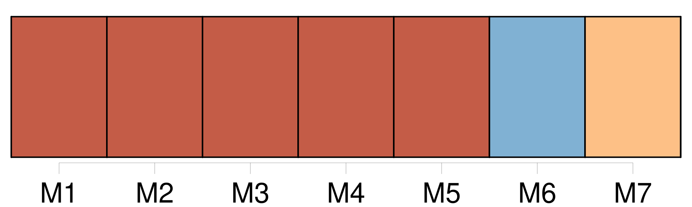
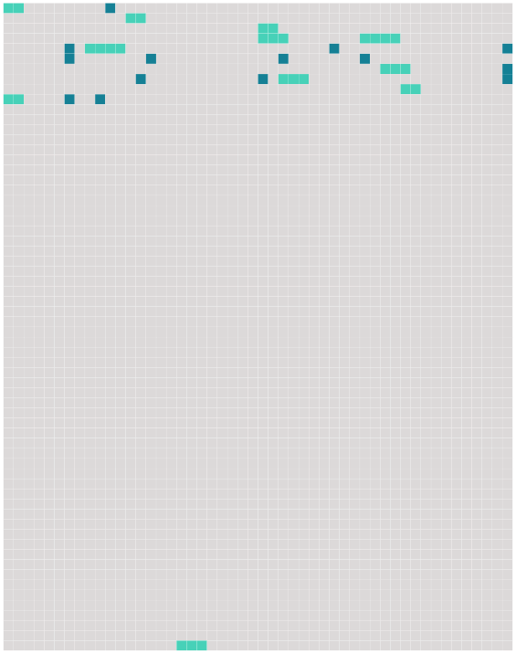

Longueur nb maillons : 25 mentions |
  |
[Sa mère] , retenue à Paris par une indisposition de [sa] seconde fille, n'avait pu partir avec elle. Les engagements de Laurence avec le théâtre d'Orléans l'avaient forcée de les y devancer ; mais elle leur avait donné rendez -vous à Lyon, et Laurence voulait y arriver en même temps qu'elles, sachant bien que [sa mère] et sa sœur, après quinze jours de séparation ( la première de leur vie ), l'attendraient impatiemment. Cependant l'aveugle insista tellement, et Pauline, à l'idée de se séparer de nouveau, et pour jamais sans doute, de son amie, versa des larmes si sincères, que Laurence céda, écrivit à [sa mère] de ne pas être inquiète si elle retardait d'un jour son arrivée à Lyon, et ne commanda ses chevaux que pour le lendemain au soir.
L'aveugle, entraînée de plus en plus, poussa la gracieuseté jusqu'à vouloir dicter une phrase amicale pour [son ancienne connaissance] , la mère de Laurence. — [Cette pauvre madame S] …… ajouta-t -elle lorsqu'elle eut entendu plier la lettre et pétiller la cire à cacheter, [c'] était [une bien excellente personne] , spirituelle, gaie, confiante …… [1 phrases] car enfin, ma pauvre enfant, c'est [elle] qui répondra devant Dieu du malheur que tu as eu de monter sur les planches. [Elle] pouvait s'y opposer, et [elle] ne l'a pas fait!! Je [lui] ai écrit trois lettres à cette occasion, et Dieu sait si [elle] les a lues!! [1 phrases] si [elle] m'eût écoutée, tu n'en serais pas là!!
… [1 phrases] [c'] est [une excellente mère] , ma bonne madame D ……
, et, quoique je sois actrice, je vous assure que je [l'] aime autant que Pauline vous aime. [2 phrases] Vous voilà riches, et je comprends que [ta mère] s'en trouve fort bien, car c'est [une femme] qui a toujours aimé [ses] aises et [ses] plaisirs ; mais l'autre vie, mon enfant, vous n'y songez ni l'une ni l'autre!! [93 phrases] Il est certain que, lorsque les deux amies et [la mère aveugle] se retrouvèrent seules ensemble au coin du feu, Pauline fut surprise et même un peu blessée de voir que Laurence reportait toute sa reconnaissance sur la vieille femme. |
 |
La ressource peut être téléchargée sur la page Ortolang
Si vous avez des questions ou vous voyez des erreurs, merci d'envoyer un mail à silvia.federzoni89@gmail.com
Site développé par S. Federzoni (contact)